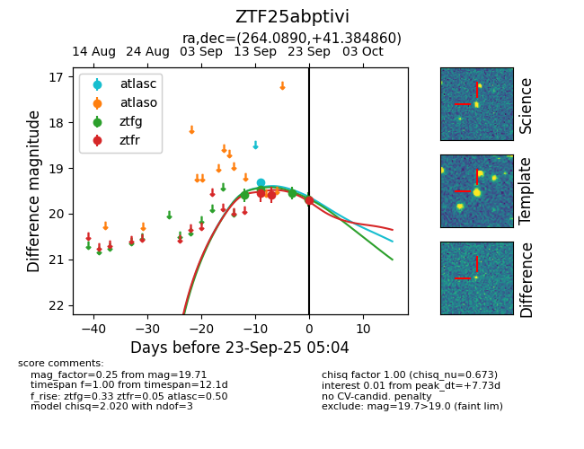
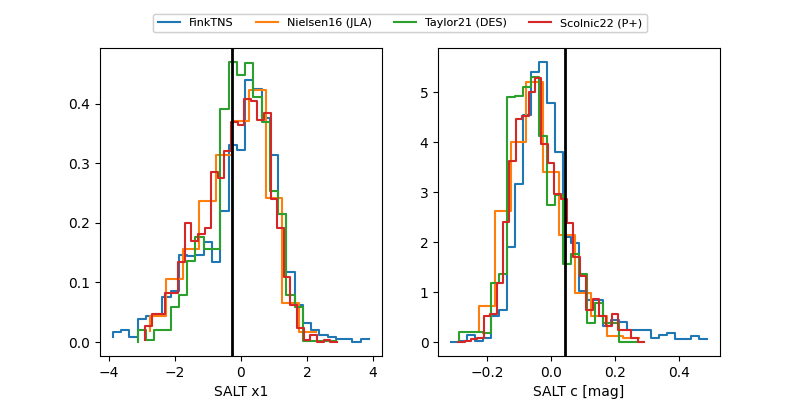

FINK: ZTF25abptivi
Lasair: ZTF25abptivi
ALeRCE: ZTF25abptivi
ZTF25abptivi (ztf,fink)
equatorial (ra, dec) = (264.0890,+41.38486)
galactic (l, b) = (66.8841,+31.08594)


last atlasc=19.32, ztfg=19.69, ztfr=19.71
1 atlasc, 4 ztfg, 3 ztfr detections